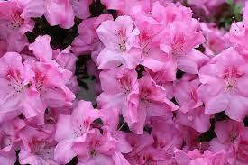

봄꽃 중에 화사하기로는 제일이다. 철쭉과 매우 비슷하지만,[2] 독성이 강한 철쭉과 달리 진달래는 식용이 가능하다. 그래도 미량의 독이 있으니 잘못 먹으면 심한 복통에 시달릴 수 있어 주의해야 한다. 독소가 많은 꽃술은 떼어내고 먹어야 한다. 진달래와 철쭉은 꽃 자체만으로는 맨눈으로 구분하기 어려운데, 대신에 진달래가 피는 시기가 철쭉보다 이르고, 진달래는 철쭉과 달리 꽃이 다 지고 난 다음 잎이 돋아나므로 구별하기 쉽다. 반면에 철쭉은 잎이 먼저 나오고 꽃이 피거나, 꽃과 잎이 같이 핀다. 또한 진달래와 철쭉을 비교하면 진달래의 잎은 끝이 뾰족하고 철쭉의 잎은 끝이 둥글어 이것으로도 구분하기도 하나, 이 경우 진달래와 잎의 생김새가 비슷한 산철쭉이나 영산홍을 진달래와 헷갈릴 수 있다. 시기상으로도 진달래는 남부 지방을 기준으로 꽃이 3월 초 무렵부터 피는 데 반해, 철쭉은 훨씬 따뜻해져야 핀다. 3월 초 무렵에 산에 핀 분홍색 빛깔의 꽃은 거의 진달래라고 보면 된다. 또한, 철쭉은 주로 공원 등에 인위적으로 심는 게 많다 보니, 대체로 나무 자체가 작고 오밀조밀한 편이지만, 진달래는 야생 꽃나무들이 대체로 그렇듯이 가지가 얼기설기 나 있고 차지하는 공간의 넓이도 더 넓다.